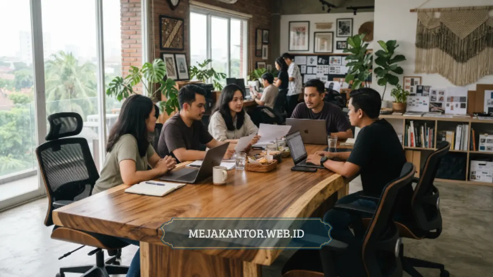

Meja rapat minimalis adalah meja meeting berdesain sederhana, hemat ruang, dan fungsional yang cocok untuk ruang kolaboratif tim kreatif dengan mobilitas tinggi dan kebutuhan tata letak fleksibel.
- Meja rapat minimalis mengutamakan efisiensi ruang tanpa mengorbankan kenyamanan diskusi tim.
- Pemilihan bentuk (persegi panjang, oval, bulat, atau modular) memengaruhi alur komunikasi dalam ruang meeting.
- Material kayu lapis, laminasi HPL, dan kombinasi metal banyak dipakai karena tahan lama dan mudah dirawat.
- Ukuran meja perlu disesuaikan dengan luas ruang dan jumlah peserta rapat harian.
- Desain modular memudahkan ruang meeting difungsikan ulang sebagai area brainstorming atau presentasi.
Kebutuhan ruang meeting di kantor-kantor modern, terutama yang diisi tim kreatif seperti agensi digital, studio desain, atau startup, terus bergeser ke arah desain yang lebih terbuka dan adaptif.
Meja rapat tidak lagi sekadar tempat duduk berdiskusi, melainkan elemen sentral yang membentuk suasana kerja kolaboratif.
Artikel ini membahas sepuluh ide meja rapat minimalis yang dapat diterapkan pada berbagai ukuran ruang meeting, lengkap dengan pertimbangan bentuk, material, dan tata letak.
Daftar Isi Artikel
- Apa Itu Meja Rapat Minimalis?
- Mengapa Tim Kreatif Membutuhkan Desain Meja Rapat yang Tepat?
- Bagaimana Cara Memilih Ukuran Meja Rapat yang Tepat?
- Apa Saja Bentuk Meja Rapat yang Populer untuk Ruang Meeting Modern?
- 10 Ide Meja Rapat Minimalis untuk Ruang Meeting Kolaboratif
- Material Apa yang Paling Direkomendasikan untuk Meja Rapat Minimalis?
- Bagaimana Tata Letak Ruang Meeting Memengaruhi Pemilihan Meja Rapat?
- Apa Kesalahan Umum saat Memilih Meja Rapat untuk Ruang Meeting?
Apa Itu Meja Rapat Minimalis?
Meja rapat minimalis adalah meja meeting dengan desain garis bersih, warna netral, dan struktur sederhana yang menghindari ornamen berlebihan, sehingga cocok ditempatkan di ruang kerja bergaya modern maupun industrial.
Konsep minimalis pada meja rapat umumnya menonjolkan fungsi dibanding dekorasi. Kaki meja cenderung ramping, permukaan meja polos tanpa ukiran, dan pilihan warna terbatas pada nuansa netral seperti putih, abu-abu, natural kayu, atau hitam doff.
Pendekatan ini membuat meja rapat lebih mudah dipadukan dengan berbagai gaya interior kantor, mulai dari kantor korporat hingga ruang kerja bersama (coworking space) yang identik dengan tampilan kasual namun tetap profesional.
Bagi tim kreatif, desain minimalis pada meja rapat memberi keuntungan tersendiri. Ruang visual yang tidak penuh dengan detail berlebih membantu peserta rapat fokus pada materi diskusi, papan tulis, atau layar presentasi, alih-alih teralihkan oleh elemen dekoratif meja itu sendiri.
Mengapa Tim Kreatif Membutuhkan Desain Meja Rapat yang Tepat?
Tim kreatif membutuhkan meja rapat yang mendukung diskusi cepat, brainstorming visual, dan perubahan tata letak ruang secara fleksibel, karena pola kerja mereka cenderung dinamis dibanding tim dengan rutinitas kerja tetap.
Berbeda dari ruang meeting formal yang biasanya digunakan untuk rapat terjadwal dengan agenda tetap, ruang kerja tim kreatif sering berfungsi ganda: sebagai tempat diskusi ide, presentasi konsep ke klien, hingga sesi kerja kolaboratif jangka pendek.
Kondisi ini menuntut meja rapat yang tidak hanya nyaman, tetapi juga mudah dipindahkan atau dikombinasikan ulang sesuai kebutuhan aktivitas harian.
Selain itu, tampilan meja rapat turut memengaruhi kesan pertama klien saat berkunjung ke kantor. Meja rapat minimalis dengan finishing rapi memberi kesan profesional sekaligus modern, yang relevan bagi industri kreatif seperti agensi periklanan, studio desain grafis, maupun perusahaan teknologi rintisan.
Bagaimana Cara Memilih Ukuran Meja Rapat yang Tepat?
Ukuran meja rapat idealnya ditentukan berdasarkan jumlah peserta rapat rutin, luas ruang yang tersedia, dan jarak sirkulasi minimal di sekeliling meja agar peserta dapat bergerak dengan nyaman.
Sebagai patokan umum, ruang meeting kecil untuk empat hingga enam orang biasanya memakai meja dengan panjang sekitar 1,6 hingga 2 meter, sementara ruang meeting menengah untuk delapan hingga dua belas orang membutuhkan meja sepanjang 3 hingga 4 meter.
Perusahaan dengan ruang terbatas dapat mempertimbangkan meja rapat lipat atau meja modular yang bisa digabung maupun dipisah sesuai kapasitas ruangan pada hari tertentu.
Selain panjang dan lebar meja, penting juga memperhitungkan jarak minimal antara tepi meja dengan dinding atau furnitur lain, idealnya tidak kurang dari 90 sentimeter, agar kursi dapat ditarik dan peserta rapat dapat berdiri atau berjalan tanpa terhalang.
Apa Saja Bentuk Meja Rapat yang Populer untuk Ruang Meeting Modern?
Bentuk meja rapat yang umum digunakan di ruang meeting modern meliputi persegi panjang klasik, oval, bulat, boat-shape, serta modular yang dapat disusun ulang sesuai kebutuhan tata letak.
Meja persegi panjang tetap menjadi pilihan paling umum karena efisien untuk ruang memanjang dan mudah dipadukan dengan sistem kabel manajemen di tengah meja.
Meja oval dan boat-shape memberi kesan lebih dinamis serta memudahkan kontak mata antarpeserta karena tidak ada sudut tajam yang menghalangi pandangan. Sementara itu, meja bulat cocok untuk ruang diskusi kecil yang menekankan kesetaraan posisi duduk tanpa posisi kepala meja yang dominan.
Untuk tim kreatif yang sering mengadakan sesi brainstorming dengan jumlah peserta berubah-ubah, meja modular menjadi solusi paling fleksibel. Beberapa unit meja berukuran kecil dapat digabung membentuk satu meja rapat besar, atau dipisah menjadi beberapa kelompok kerja kecil dalam satu ruangan yang sama.

10 Ide Meja Rapat Minimalis untuk Ruang Meeting Kolaboratif
Berikut sepuluh ide meja rapat minimalis yang dapat dipertimbangkan untuk ruang meeting tim kreatif, disusun berdasarkan bentuk, material, dan pendekatan tata letak:
- Meja rapat persegi panjang dengan kaki metal ramping dan permukaan finishing kayu natural, cocok untuk ruang meeting bergaya industrial.
- Meja rapat oval berbahan laminasi HPL warna putih doff yang memberi kesan bersih dan lapang pada ruang meeting berukuran sedang.
- Meja rapat modular berbentuk trapesium yang dapat disusun menjadi konfigurasi U-shape saat sesi presentasi klien.
- Meja rapat bundar berdiameter kecil untuk ruang diskusi tim inti yang menekankan interaksi setara antarpeserta.
- Meja rapat dengan integrasi cable management tersembunyi, mendukung ruang meeting yang mengandalkan perangkat presentasi digital.
- Meja rapat lipat portabel yang memudahkan ruang meeting difungsikan ulang sebagai area kerja bersama di luar jam rapat.
- Meja rapat panjang dengan top table dua warna kontras untuk menonjolkan identitas visual perusahaan kreatif.
- Meja rapat boat-shape dengan sudut membulat, membantu efisiensi sirkulasi di ruang meeting berbentuk memanjang.
- Meja rapat kombinasi kaca dan kayu yang memberi kesan modern namun tetap hangat pada ruang meeting bertema minimalis.
- Meja rapat set dengan whiteboard mobile terintegrasi, mendukung sesi brainstorming visual khas tim kreatif.
Setiap ide di atas dapat disesuaikan lagi dengan palet warna interior kantor, sistem pencahayaan ruangan, serta anggaran pengadaan furnitur yang tersedia.
Material Apa yang Paling Direkomendasikan untuk Meja Rapat Minimalis?
Material yang umum direkomendasikan untuk meja rapat minimalis adalah kombinasi particle board berlapis HPL atau melamin untuk permukaan meja, dipadukan rangka kaki berbahan metal atau kayu solid untuk menjaga kestabilan struktur.
Permukaan berbahan HPL (High Pressure Laminate) dipilih karena tahan gores, tahan panas dari perangkat elektronik seperti laptop, serta mudah dibersihkan dari noda tinta atau minuman saat rapat berlangsung.
Sementara itu, kaki meja berbahan metal memberi kesan ramping khas desain minimalis sekaligus menopang beban meja dengan lebih stabil dibanding kaki kayu solid berukuran besar.
Bagi kantor yang mengutamakan kesan hangat dan alami, kombinasi top table kayu dengan finishing veneer dapat menjadi alternatif, selama tetap diberi lapisan pelindung agar tidak mudah tergores oleh penggunaan harian.
Bagaimana Tata Letak Ruang Meeting Memengaruhi Pemilihan Meja Rapat?
Tata letak ruang meeting menentukan bentuk dan ukuran meja rapat yang paling sesuai, karena ruang berbentuk memanjang, persegi, atau terbuka tanpa sekat masing-masing membutuhkan pendekatan penempatan furnitur yang berbeda.
Pada ruang meeting tertutup berukuran kecil, meja rapat persegi panjang atau oval umumnya lebih efisien karena mengikuti proporsi ruangan.
Sebaliknya, pada area kerja terbuka (open space) yang difungsikan sebagai zona meeting informal, meja rapat modular atau meja bundar kecil lebih fleksibel karena dapat dipindahkan tanpa mengganggu alur sirkulasi karyawan lain.
Pencahayaan ruangan turut memengaruhi kenyamanan visual saat rapat berlangsung. Ruang meeting dengan pencahayaan alami dari jendela besar sebaiknya menempatkan meja rapat tidak langsung membelakangi sumber cahaya, agar peserta rapat yang duduk menghadap jendela tidak silau saat melihat layar presentasi.
Apa Kesalahan Umum saat Memilih Meja Rapat untuk Ruang Meeting?
Kesalahan umum saat memilih meja rapat meliputi mengabaikan jarak sirkulasi, memilih ukuran meja tanpa memperhitungkan jumlah peserta maksimal, serta memilih material yang tidak sesuai dengan intensitas penggunaan ruang meeting.
Kesalahan lain yang cukup sering terjadi adalah memilih meja rapat berdasarkan tampilan visual semata tanpa mempertimbangkan kebutuhan fungsional, seperti akses stop kontak untuk perangkat elektronik atau kemudahan pembersihan permukaan meja.
Kondisi ini dapat menyebabkan ruang meeting terlihat estetis namun kurang nyaman digunakan dalam jangka panjang, terutama pada kantor dengan frekuensi rapat tinggi setiap harinya.
Perusahaan juga sebaiknya mempertimbangkan kemungkinan penambahan kapasitas ruang meeting di masa mendatang, sehingga pemilihan meja modular dapat menjadi investasi yang lebih adaptif dibanding meja rapat berukuran tetap.
Memilih meja rapat minimalis untuk ruang meeting tim kreatif sebaiknya mempertimbangkan tiga hal utama: kesesuaian ukuran dengan luas ruangan, bentuk yang mendukung pola diskusi tim, serta material yang tahan terhadap intensitas penggunaan harian.
Desain modular menjadi pilihan yang relevan bagi tim dengan kebutuhan tata letak yang sering berubah, sementara desain persegi panjang atau oval klasik tetap menjadi opsi aman untuk ruang meeting formal.
Untuk pembahasan lebih lanjut mengenai furnitur kantor pendukung ruang kerja kolaboratif, dapat dilihat pada ulasan meja staff L-shape MSO-140L dan daftar harga partisi workstation kantor terbaru.

Mega Anggun (Ega)
Penulis Konten & Spesialis Penataan Interior Kantor. Berpengalaman dalam memberikan tips ergonomi dan memilih furnitur terbaik untuk menunjang produktivitas kerja.